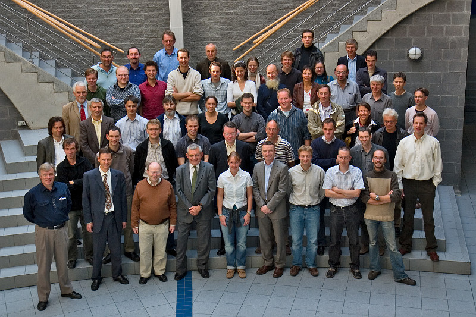

Participants of the symposium for Jan Paredaens's 60th birthday.
From left to right: Front row: Hans Janssens; Peter Peelman; Marc
Gyssens; Jan Paredaens; Nele Dexters; Geert Jan Houben; Toon
Calders; Frank Neven; Dries Van Dyck. Second row: Bart Kuijpers;
Stijn Dekeyser; Jan Hidders; Philippe Michiels; Marc Andries;
Marc Gemis; Jef Wijsen; Leonid Libkin; Jan Van den Bussche. Third
row: Thomas Schwentick; Dirk Van Gucht; George Fletcher; Paul De
Bra; Eveline Hoekx; Floris Geerts; Bart Goethals; Chris Tuijn;
Letizia Tanca; Victor Vianu. Fourth row and above: Gottfried
Vossen; Michael Mampaey; Luca Cabibbo; Wim Le Page; Hendrik
Blockeel; Roel Vercammen; Jos Baeten; Stijn Vansummeren; Bernhard
Thalheim; Koen Smets; Adriana Prado; Natalia Kwasnikowska;
Maurice Bruynooghe; Wouter Gelade; Tadeusz Litak (top); Olga De
Troyer; unknown PhD student from Gent; Gabriel Kuper; Kees van
Hee; Dirk Leinders; Dan Suciu; Calin Garboni; Balder ten Cate.
